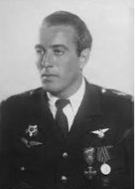
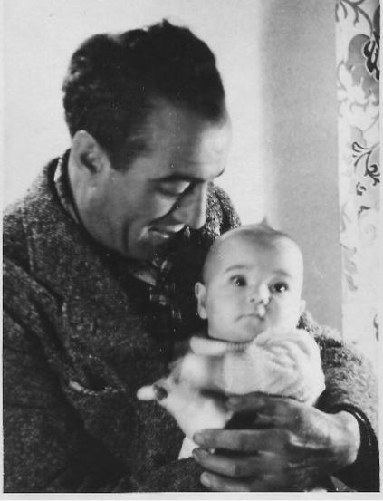
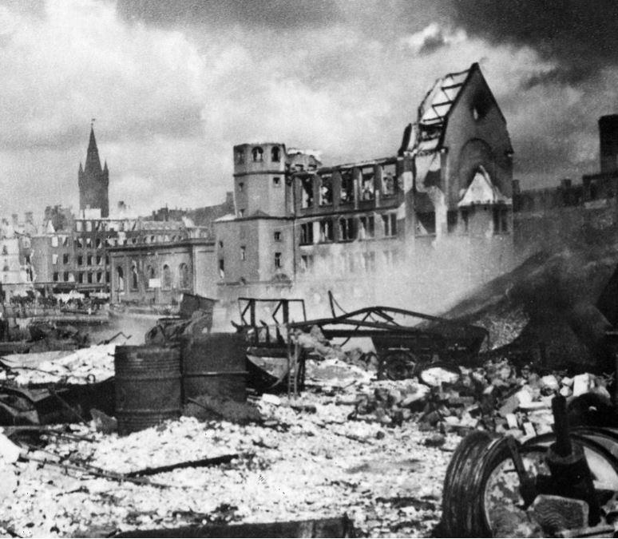
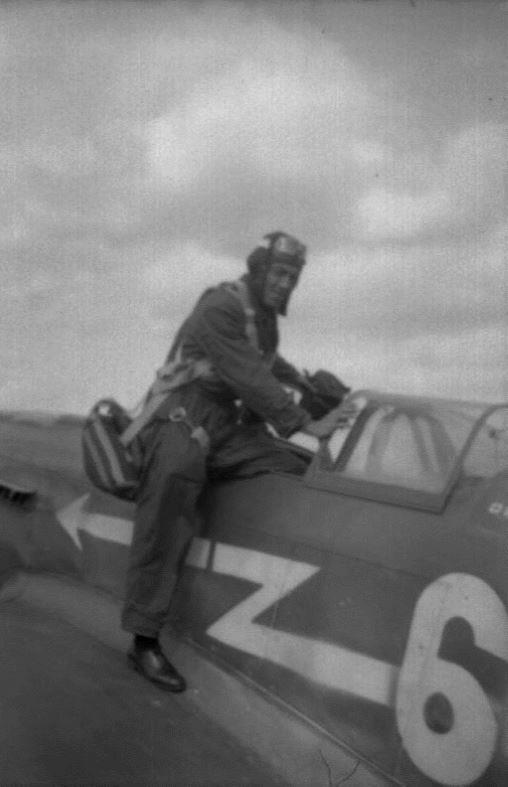
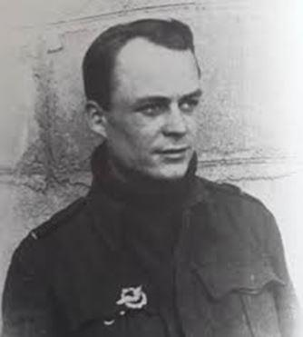
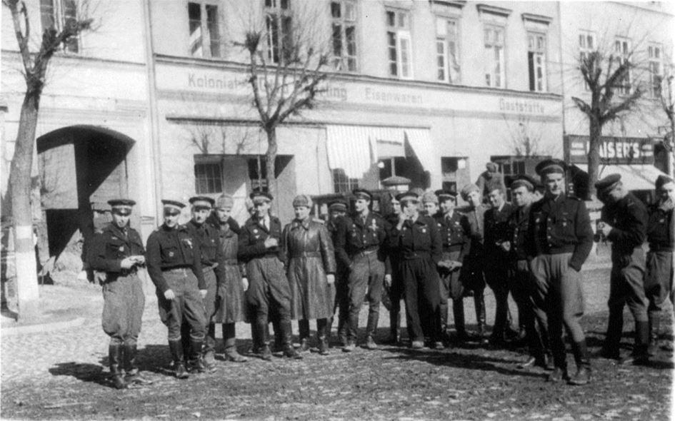
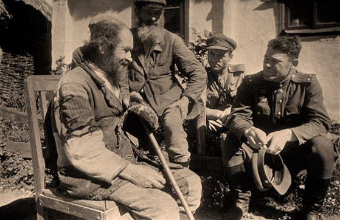
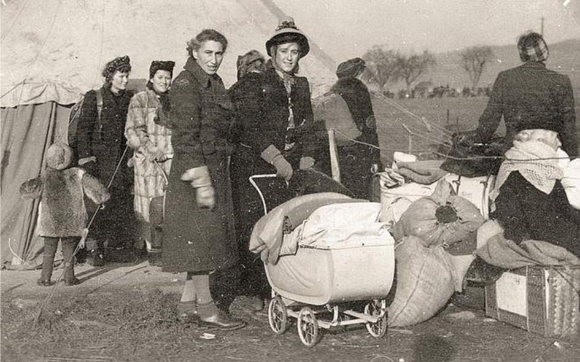
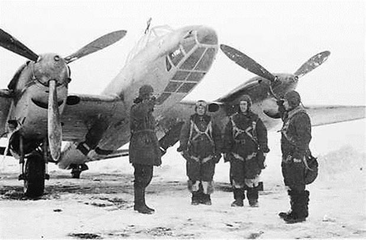
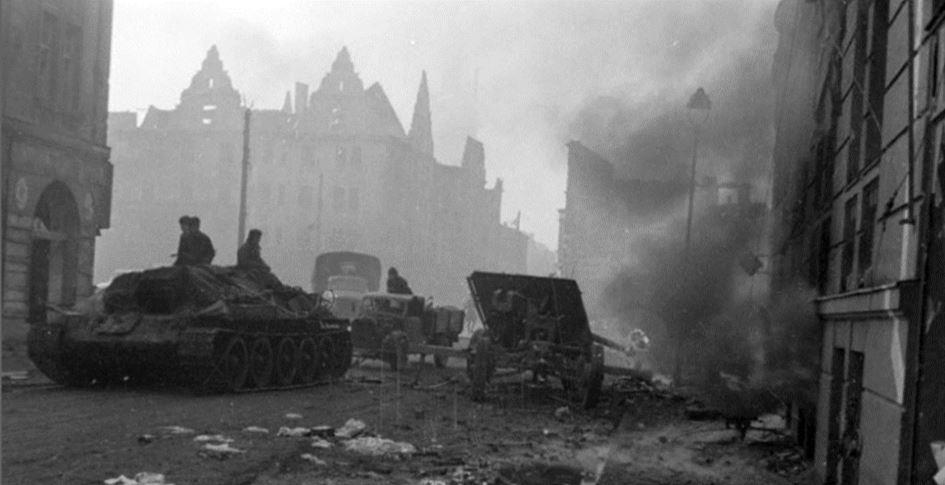

Il portait un calot, une casquette bleu foncé l'hiver et blanche l'été, un chapeau de pêcheur délavé, un feutre de chasseur orné de plumes de lagopède, et, sans couvre-chef, c'était mon papa.
Il prenait des accents du sud, italien, russe, arabe, vietnamien, africain, de loubard parisien pour me faire rire. Il avait toujours mille anecdotes ou histoires à raconter, des chansons tendasques à fredonner et qu'il soit dehors ou dans une maison, se levait en saluant avec émotion lorsque retentissait la Marseillaise ; il m'affirmait que son métier était militaire et que je n'avais pas le droit de dire autre chose.
 Maurice GUIDO et sa fille Anne-Marie
Fillette empêtrée de mystères, ce n'est que lorsqu'il m'a autorisée à l'accompagner à l'avant-première du film « Normandie-Niemen », que j'ai enfin compris ses cachotteries pudiques afin de rester un père banal.
Quelquefois sombre, mélancolique, bourru, quelquefois drôle, clownesque, plaisantin, toujours amateur de pâtes et gastronome à la fois, rude ou tendre, mais d'une éducation raffinée et empreint d'un profond respect envers le vivant ou les choses de tous les jours, c'était Lui.
Il ne voulait jamais parler de ses guerres alors qu'il paraissait intarissable sur ses séjours en pays étrangers, les configurations stellaires, la vie des fourmis, mais surtout il préférait évoquer son enfance dans son pays de montagnes, ses longues marches pour trouver un chamois ou simplement profiter de la beauté de la nature et du ciel.
Pourtant malgré sa discrétion il nous a laissé un « journal de route ? » de son aventure au sein du régiment Normandie Niemen que j’ai choisi de léguer récemment au Musée de la Grande Guerre Patriotique de Moscou. Un journal manuscrit encore inédit que je propose aujourd’hui aux lecteurs de la revue « Méthode »…
Cahier de Route ?
POWUNDEN
Le 8 février 1945 Pour débuter ce cahier il faut que je dise d’où il vient : résultat de la braderie effectuée par la troisième escadrille. Ils ont rapporté pas mal d’affaires. J’ai hérité un crayon, une gomme, une brosse à ongles. Tout le monde a des postes de T.S.F.
Nous avons trouvé un moteur électrique sur le terrain, nous sommes éclairés par électricité boche. Il a fait mauvais, pas de vol, il pleut, nous étions d’alerte.
J’en suis à 23 missions, pas vu un boche.
Demain nous devons « en principe » aller (brader) un patelin des environs. Henri essaye de nous charmer avec la T.S.F., il se débat avec deux postes récalcitrants –
Il a quelque chose contre moi mais je n’arrive pas à comprendre quoi.
Le 9.2 Je suis porté à croire que l’ouverture de ce cahier m’a porté bonheur.
Ce matin, ciel à peu près beau, départ au terrain, le bradage est décommandé.
Midi départ en mission. Je ne pensais pas rencontrer des boches car j’en étais à ma 23° mission stérile donc tenue de secteur au-dessus de Kœnigsberg.
Pas de D.C.A. au bout de 30 minutes de vol, « Michel » notre radio au sol, signale des boches au sud.
Piqué à travers la couche de nuages et foncer vers le sud. À notre gauche, Perrin et moi en même temps voyons 2 Fritz qui se dirigeaient probablement sur leur terrain. Perrin vire en les surveillants et pique pour prendre du jus. Je pique moins que lui et finalement nous arrivons juste en même temps sur les Messerch. Perrin tirait de loin au début, ensuite il s’est rapproché davantage, et « son » Messer fumait blanc, j’arrive finalement à le faire passer dans la croix et je tire, il vire légèrement sous moi, je le laisse passer sous le deuxième qui lui aussi s’amuse à virer sur moi. Sans me presser, je l’ajuste et je suis sûr d’avoir vu des « billes » rouges arriver sur le capot et dans la cabine.
Je suis étonné d’avoir réalisé tout le long ce qui se passait et d’avoir l’impression d’avoir tiré juste du premier coup.
Demain, parait-il, on doit changer de terrain. « Bondi scoro »
10. Rien de spécial. Brouillard.
11. Brouillard. Après-midi mission - équipier du Cdt Delfino. Une grosse bagarre. Des Messerch dans tous les coins.
1ère bagarre : le Cdt tire 1 Messerch qui fume je lui mets une rafale ensuite regroupement rebagarre le Cdt poursuit un autre Messerch mais 2 lui plongent dedans, je le dégage en leur tirant une rafale devant, ensuite je perds le Cdt et me retrouve seul poursuivant un Messerch qui devait être un « capable » car ses feintes étaient très bonnes, je m’aperçois que je suis suivi par des autres Messerch. J’ai continué à tourner pendant 7 à 8 minutes tout le monde avait l’air de bien se trouver et personne ne voulait partir. Je croyais être à bout de munitions car je tiraillais temps en temps mais je crois que ma correction était trop courte car le Messerch n’a pas fumé...
Ensuite après une rafale mieux que les autres d’après moi j’ai perdu le 1er Messerch car les 2 autres arrivaient en position de tir sur moi. J’ai réussi à décramponner après une chandelle dans le soleil, je suis rentré en. (illisible) et après les lignes, j’ai reconnu ma route, je suis rentré en même temps que les autres avec une victoire en collaboration.
Après l’atterrissage j’ai eu une peur rétrospective d’y être resté. Monge n’est pas rentré avec nous mais nous avons l’espoir qu’il soit resté sur l’autre terrain.
Faux départ pour le changement de terrain, nous couchons encore à Powunden.
Demain, déménagement probable.
WITTENBERG
12. Mauvais temps
13. essai de changement de terrain, nous avons passé notre journée au K.P.
14. Changement de terrain, au sud de Koenisberg, je suis revenu à Witenberg avec une roue sortie.
15. 1ère mission sur les lignes rien à signaler, le front est assez calme et nous n’avons rien vu, plafonds successifs.
2ème mission, au décollage en remettant la manette du train à neutre ma roue gauche ressort. J’ai fait la mission quand même. Plafond encore plus bas, nous croisons dans les parages des « saucisses » russes et leur D.C.A. nous tire. Rien vu.
3ème mission : plafond à 3 400 mètres nous faisons la ligne du front, la D.C.A. boche légère me tirant lorsque j’étais en piqué, c’est très impressionnant de voir ces aiguilles lumineuses venir vers vous, je n’ai pas été touché. Nous nous sommes « reniflés » avec des LA 7. 1 virage et après nous avons perdu Martin pour le revoir un peu plus tard.
À l’atterrissage, en roulant au sol, j’ai tiré un lièvre au revolver. Je l’ai raté.
Le soir, douches à la Russe. J’ai dansé avec une toubib russe.
16- Mauvais temps rien de neuf, nous diminuons nos bagages pour aller sur le front de Berlin... ? Monge perdu le 11 avec Iribarne n’est pas rentré.
17- Toujours ce ciel sale de Prusse, nous étions d’alerte après quelques essais du temps, nous avons fait quelques missions (2 pour moi), des missions (pour la vodka) mais qui ne sont pas de tout repos. 3 ou 400 mètres à l’altimètre et ce brigand de Chanel a la douce manie de nous promener dans les lignes boches ce qui a le don d’éveiller leur esprit zélé et de les pousser à s’entraîner sur nous avec leurs innombrables lance-pierres.
Le soir (soirée) au « starlavoia » : qq. acteurs russes, des chœurs, et des danses. Le tout assez bien ou alors je ne sais plus juger vu le manque d’habitude... !
18. Nous étions d’alerte, et puis ce n’était pas nous et... finalement on s’est levé de bonne heure. Ordre de décollage à 6 dans 20 minutes, contrordre et puis re-ordre de faire les gendarmes (Perrin et moi) au-dessus du terrain.
On part et on nous arrête sur la piste... Perrin va quand même « roder » son « samoyède ». Je retourne au K.P. pour m’entendre donner l’ordre de partir avec Martin et 3 autres... Oh ! Courteline ! Je retourne au 20 et « davaï » avec Henri avec qui on s’est fait des politesses pour prendre la place de chef de patrouille, le pitaine ayant des ennuis au moteur. Henri ne peut décoller, je pars à la poursuite de la patrouille « d’acier », ma roue droite sort, je me pose.
Dans la soirée, couverture à priori sur les chars... 200 à 300 mètres de plafond par moment, même moins. Personne en vue, j’ai contemplé le sol : des maisons qui flambent, des jouets d’enfant qui se déplacent en zigzag, beaucoup de fumée sur la ligne. C’étaient des mares de sang dans les cours enneigées des fermes, de la tripaille, beaucoup de plumes, des édredons éventrés.
 Charles REVERCHON, surnommé Choute, a été descendu par la DCA et s’est écrasé ce 18 février 1945 avec son avion en flamme… mais il survivra. Amputé d’une jambe, il restera 22 mois entre hôpital et maison de rééducation.En rentrant, j’étais fatigué. J’ai dormi une heure.
En me réveillant, j’apprends que Choute a percuté le sol en flammes, c’était un bon copain... Sauvage ainsi qu’Henri ont eu un bonbon Fritz dans le plan. Je crois que toute la (f.l.a.k.) est réunie dans cette saloperie de poche prussienne.
J’ai fait une constatation humoristique. Dans le bâtiment des officiers boches où nous habitons, car nous sommes sur une base Fritz, il y avait le chauffage central avec... baignoire etc. Or nos amis russes ont démonté l’installation de chauffage pour faire le pain dans ce four improvisé. Et nous continuons à prendre le (bain) dans des baraques avec des gamelles d’eau.
19- mauvais temps. Journée passée à rien faire tout en faisant mille choses utiles et futiles. On nous promet du beau temps pour demain ?
L’artillerie lourde à côté de nous fait trembler les vitres. Nous devons être à 5 ou 6 Km du front.
20. Il fait beau nous partons de bonne heure en mission, nous briguons la poche, la D.C.A. nous signale sa présence, sans insister cependant, il faut cela pour attirer l’œil des chasseurs amis s’il y en a. Nous n’avons rien vu.
- 2° mission commencée sur nos lignes, nous nous retrouvons à 3 sur 7 à 40 Km à l’intérieur et nous continuons à nous enfoncer plus loin, je n’étais pas à mon aise, surtout avec ce soleil aveuglant.
-3° mission vers le soir, nous avons assisté au bombardement de Brandsberg, j’ai vu la ville intacte et quelques secondes après, ce n’était plus qu’un tas de ruines et un énorme brasier.
Rien vu dans le ciel.
21 - Nous sommes d’alerte et il fait beau, encore une rude journée.
1ère mission, mon moteur ne donne pas grand-chose, j’insiste et après un tour dans les lignes boches, je me vois obligé de rentrer si je ne veux pas me poser chez eux.
2ème mission à 4’500, je ne peux pas suivre Lemar, nous sommes loin chez eux et tous les deux seulement, je lui demande à rentrer.
3 ème mission couverture de terrain... 1 h. Nous avons vu tout un tas de bambins qui servaient la messe aux dernières résistances de la poche.
Grosse et heureuse nouvelle - Monge est revenu, il avait réussi à échapper à son Fritz et s’était perdu et avait atterri près de Tilsitt. !
En ce moment, la maison tremble, les Russes doivent bombarder Koenisberg ! Je suis fatigué et vais me coucher de bonne heure.
22 - Hier, j’ai pris une petite cuite... !
23 - Il fait mauvais. On nous parle du prochain déménagement.
24 - Impossible partir, il fait toujours mauvais, brouillard et ça dégèle.
FRIEDLAND
25 - mauvais le matin, mais après midi nous sommes enfin partis vers notre nouveau terrain situé à 3 Km sud de Friedland. Terrain très petit, bien camouflé, terrain de fortune plein de flaques d’eau, de la boue partout, nous courons vers notre futur ‘home’. Il n’est pas mal, c’est une grande ferme d‘aspect cossu. Pour ce soir, nous ne fouillons pas beaucoup.

Photographie de groupe à Friedland - Maurice Guido, quatrième à partir de la droite
26 - Il fait mauvais, nous en profitons pour faire des investigations dans « notre propriété ». C’est la ferme château du général von der Galltz (Goltz) qui est parti précipitamment. Nous avons une salle de bain, ce qui est appréciable, mais voilà elle ne peut fonctionner car le moteur électrique alimentant la ferme modèle en eau est saboté.
J’arrange mon coin le plus confortable possible. 7 dans la chambre : Marchi, Lemar, Perrin, Martin, Versini, Monge et moi. Ça a l’air de marcher. J‘ai trouvé une paire de skis tout neufs au grenier - et des bâtons disparates. Les copains rient car malgré mon assurance, ils disent qu’il n’y aura plus de neige.
27 - Il fait mauvais, le terrain est détrempé. Il parait que nous sommes ici au repos. ! J’ai visité la ferme, des énormes bâtiments, une très riche ferme, j’ai trouvé une cinquantaine de vaches tuées et alignées dans un champ à côté de l’écurie ; qui les a tuées ? Sans doute moitié les ennemis et l’autre... l’avance !
Versini, Monge et moi tuons des moineaux à la carabine 22 long rifle.
28 - Nous apprenons que dans Friedland il y a une colonie de femmes, de gosses et vieux Fritz. Par curiosité, nous descendons, nous commençons à visiter le village qui est passablement amoché, surtout un quartier qui a dû subir des bombardements, il est entièrement rasé - et quand je dis entièrement, c’est tout.
Ensuite, nous avons visité le fameux cantonnement, nous avons vu des filles presque potables, mais l’air très fatigué. Grâce à Monge, nous avons pu discuter. Versini étant resté dans une maison a eu les grâces d’une demoiselle.
1° Mars - Le terrain est toujours détrempé, il commence à tomber quelques flocons de neige. Hier soir, au cours d’une fête avec le 18° qui est avec nous, j’ai réussi à prendre une fameuse biture, j’en ai mal au crâne et grâce à la vodka 90°, j’ai l’estomac passablement barbouillé.
2 - Il continue à neiger des plus belles. J’ai fait quelques pas à ski et une légère descente, dommage qu’il n’y ait pas de pente ici. Nous mangeons de mieux en mieux. T.V.B.

3 - Il y a 30 cm. De neige, j’ai perdu la matinée à traîner et à faire une toilette complète ; ensuite quelques photos dans la neige avec les skis et le fusil. Nous allons à la chasse, j’ai tué un lièvre à la mitraillette. Le poste de Marchi nous relie à la France, vraiment nous sommes bien. Rien de nouveau pour notre travail.
4-5-6-7. Il neige encore, la piste n’est pas praticable, les habitants fritzs de Friedland, femmes vieux et enfants, travaillent d’arrache-pied pour nous tasser la piste et déblayer la neige pour pouvoir décoller.
Avec Versini, nous chassons les moineaux avec la carabine 22 long rifle que j’ai. Nous en avons eu une vingtaine que nous faisons cuire le soir avec des lardons et du beurre. On nous parle de la prochaine venue du Général Petit ?
8 - Il fait très beau, 1 mission de l’autre côté de la poche, nous couvrons Elbing et Bransberg. Elbing brûle encore, c’est à 6 km. Des lignes et nous voyons l’ancien terrain qui est déjà occupé par les Russes avec leurs Niens(illisible). Rien vu pendant la mission.

Elbing (aujourd’hui Elblag) 1945
Fin de la première partie. Suite et fin dans le prochain numéro de « Méthode ».
Partager cette page